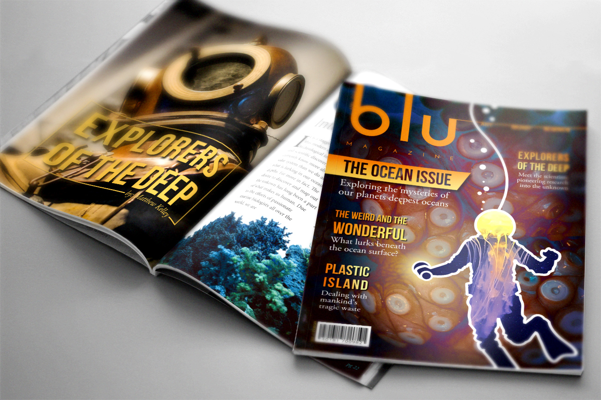

Project: Blu Magazine
Role: Graphic Design, Illustration
Tools: Pencil & Paper, Photoshop, Affinity Designer
For this month's issue of Blu, the theme was "our mysterious ocean depths."

I wanted to emphasize the difference in scale between the foreground figure and the mysterious creature in the dark. The shape of the diver was done in vectors to use as a mask for a closeup photo of a jellyfish, while the background is an enlarged photo of an octopus. I used a soft yellow gradient in the center and a dark vignette around the edges of the composition to create the illusion of light. The feeling of light eminating from the diver's flashlight is further reinforced with a gradient effect applied to the surrounding article headlines.
The photography chosen here is related to the scene I created for this issue's cover.
In this layout I wanted to emphasize the scope and severity of the problem discussed in the article by incorporating a large photograph of plastic waste polluting the shore that spans across the entire two-page spread.


Explore the covers above to see an expanded case study of each issue.